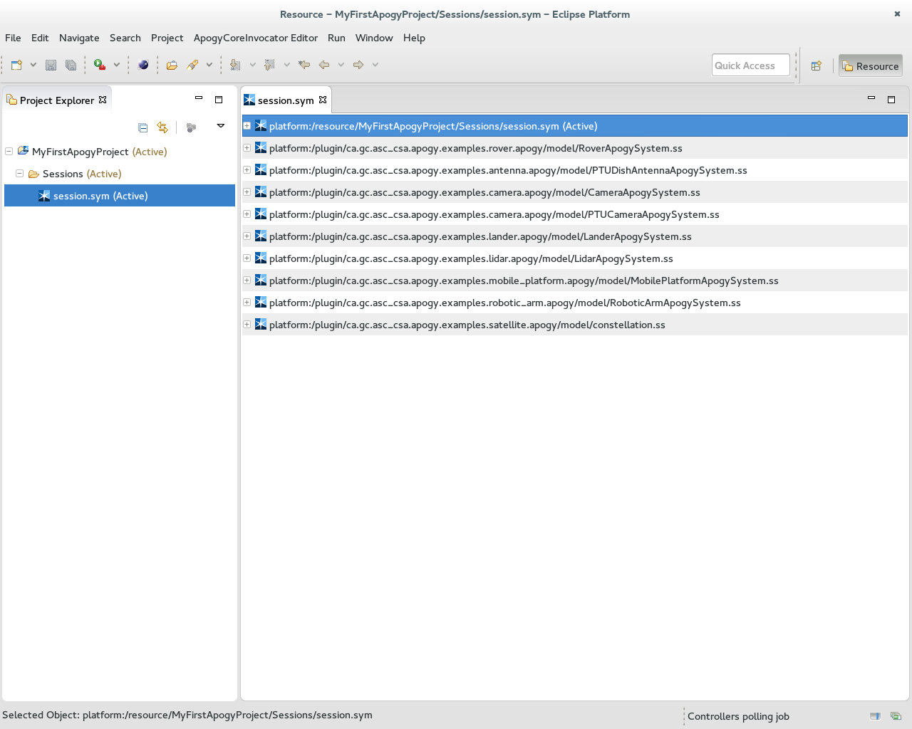
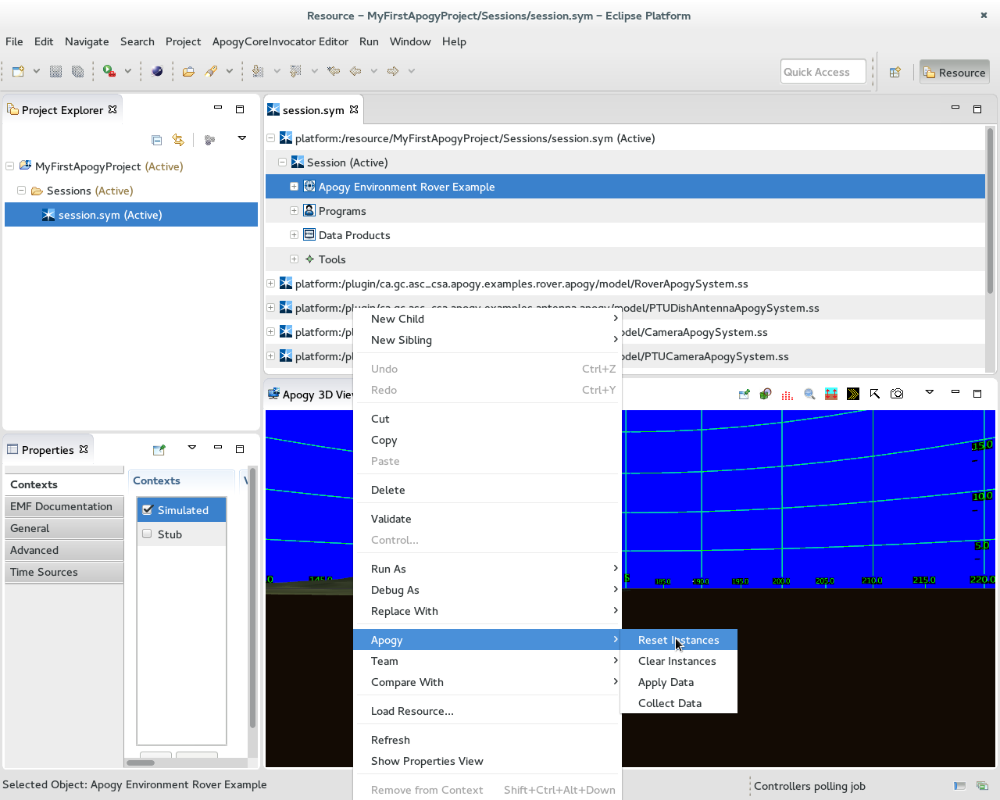
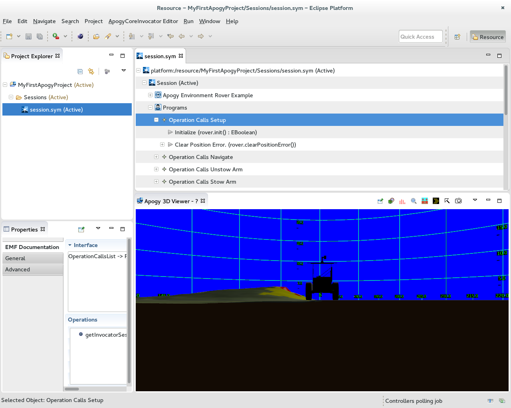
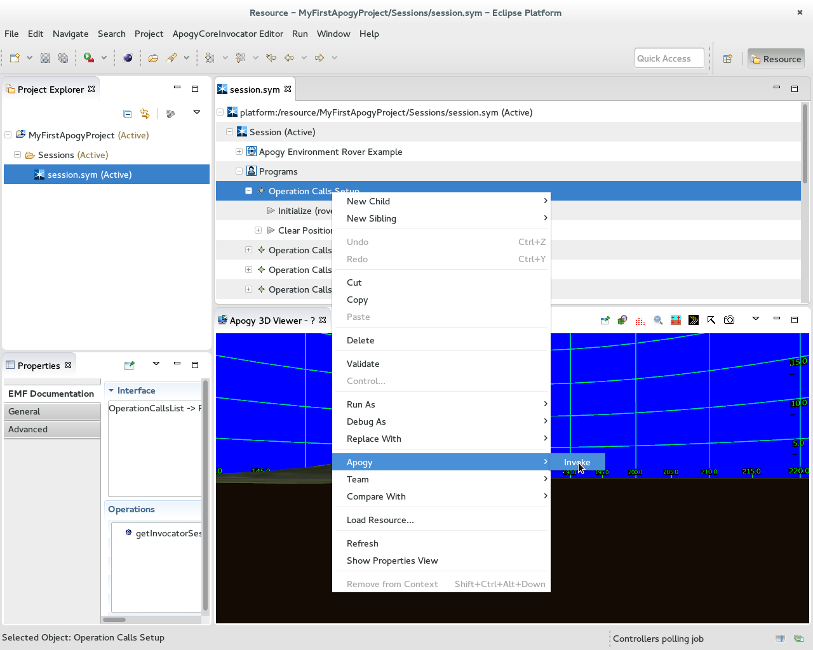
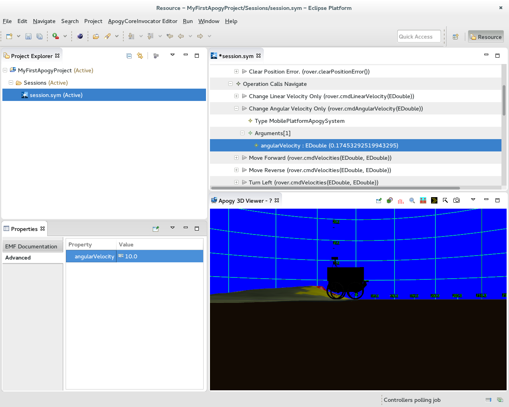

Simple Way To Start
-
Simple Way To Start
-
Importing the Rover Example Session
-
Configuring the Views
-
Initializing and Using the Rover
The examples are a simple way to get started interacting with Apogy and seeing what it can do. As laid out in the
Registered Apogy Projects section above, it's easy to start using Apogy
Systems; by doing so, one can gain a foundation for the material and better understanding for how Apogy and its various components operate.
Lets use the
Rover example system to do that. Here is the step by step procedure to get started:
Importing the Rover Example Session
- Ensure the
Project Explorer view is opened
- Right-click on the
Project Explorer and select "
New > Project...";
- Select "
Apogy > New Apogy Project" and click "
Next >";
- In the wizard that appears:
- Enter
MyFirstApogyProject for the name of the new project;
- Ensure that the "
Import Registered Apogy Project" check box is
checked;
- Click "
Next >";
- In the list of registered Apogy Project, select
Rover Example;
- Click "
Finish";
- The project is now created. The session editor should now be opened and the content of the session.sym displayed and should look like this:

Configuring the Views
In order to view the Rover, a few views are necessary. Here are the steps to configure them:
- Ensure the
Properties view is opened.
- Open the
Apogy 3D Viewer by selecting in the menu bar
Window > Show View > Other.. > Apogy Core > Apogy 3D Viewer and press OK;
- Select "
Apogy > New Apogy Project" and click "
Next >";
- The Apogy 3D viewer should now be opened (this can take a few seconds) and should look like this:

Initializing and Using the Rover
You are now ready to initialize the rover and start issuing it commands. Here are the steps to do that:
- In the session editor, navigate down the tree to the
Apogy Environment (see screen shot below);

- Select "
Apogy Environment" and right-click, this will bring up a menu like this:

- Select "
Apogy > Reset Instances". This will start the rover instanciation and the rover geometry will appear in the Apogy 3D Viewer:

- The rover is now ready to accept commands. Lets start by invoking its
init() command :
- In the session editor, navigate down the tree to the
Operation Calls (see screenshot below). This is a container of Operation Calls;

- Select the "
Init()" operation call and right-click, this will bring up a menu like this: ;

- Select "
Apogy > Invoke". This will invoke the command on the rover.
- Select "
Change Angular Velocity" and invoke it using the same procedure. The rover should now start to turn on itself at a rate of 10.0 °/s.
- Select "
Change Linear Velocity" and invoke it using the same procedure. The rover should now start move forward at 0.5 m/s and turn at the same time, thus doing an arc turn.
Lets modify the angular velocity of the rover to make the arc turn wider. In order to do so, we will change the "
angularVelocity" parameter of the "
Change Angular Velocity" command. Here is how to do it:
- Select "
Change Linear Velocity" and expand it down to the "
angularVelocity" parameter (see screenshot below).

- Select the "
angularVelocity" parameter, the Properties view should now show it and its current value (10.0 °/s)
- In the Properties view, set the "
angularVelocity" parameter value to 2.0 °/s
- Invoke "
Change Linear Velocity". This will command the current angular velocity without changing the linear one, making the rover move along a wider arc.
If you want the rover to stop, just invoke "
Stop". This command will set both linear and angular velocity to zero.